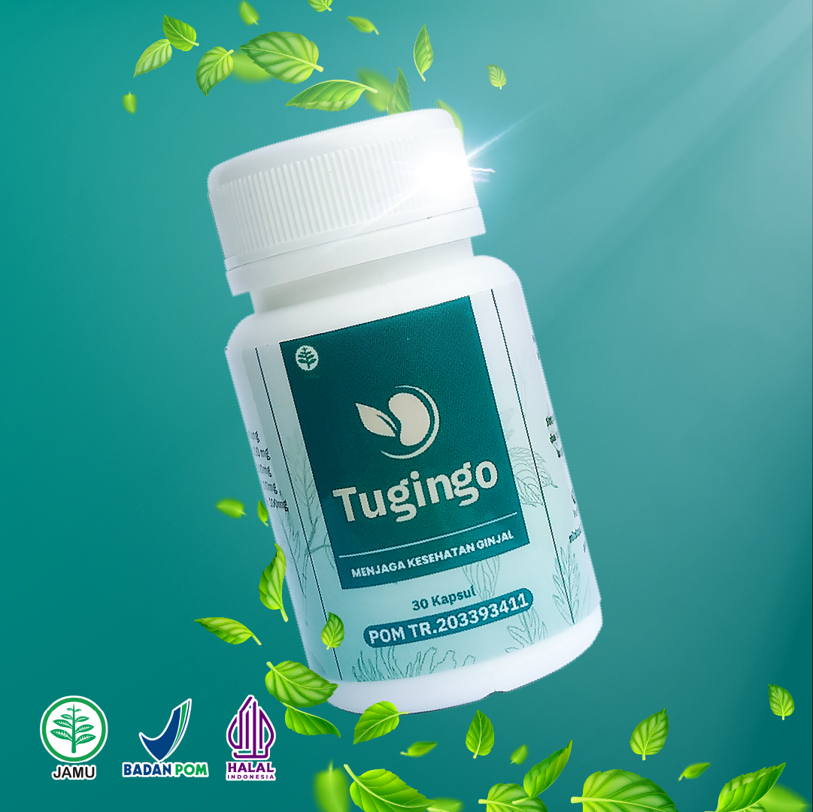
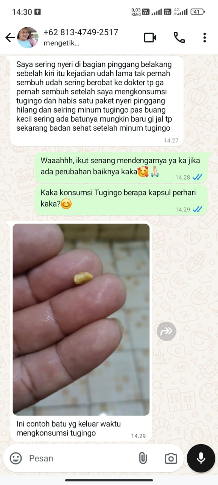

Pernah gak sih Anda ngerasa tersiksa banget pas lagi di kamar mandi? Mau buang air kecil aja rasanya harus nahan napas, perih, dan keluar cuma sedikit-sedikit.
Belum lagi rasa pegal dan linu di pinggang belakang yang gak hilang-hilang, mau duduk salah, mau tidur pun serba salah.
Kalau Anda atau suami di rumah sering ngalamin ini, tolong jangan disepelekan. Itu bisa jadi tanda kalau ada "batu" yang menyumbat saluran kemih atau ginjal Anda lagi ngasih sinyal darurat. Jangan tunggu sampai kondisinya makin parah dan bikin aktivitas harian hancur berantakan.
Kenalkan: TuginGo, solusi herbal alami yang diformulasikan khusus untuk menjaga kesehatan ginjal dan membantu meluruhkan sumbatan batu urin langsung dari sumbernya.

Kandungan alami dari daun tempuyung, keji beling, dan ekstrak alpukat di dalam TuginGo ini bekerja aktif untuk membantu meluruhkan batu urin di ginjal dan saluran kemih Anda.
Bayangkan rasanya bisa buang air kecil dengan plong, lancar, dan bebas dari rasa anyang-anyangan yang menyiksa. Anda bisa kembali beraktivitas, bekerja, atau nemenin anak-anak main tanpa perlu sebentar-sebentar lari ke kamar mandi sambil menahan sakit yang luar biasa di fisik Anda.
Kondisi pada ginjal itu kalau dibiarkan bisa merembet ke mana-mana. Bayangkan berapa banyak uang belanja dan tabungan masa depan keluarga yang bakal habis terkuras untuk biaya perawatan berkelanjutan.
Ekstrak alpukat (Persea americana) dalam TuginGo kaya akan potassium alami yang gak cuma membantu membuang kalsium berlebih pemicu sumbatan, tapi juga membantu melebarkan pembuluh darah Anda.
Efeknya? Tekanan darah bisa ikut lebih terkendali. Ini adalah cara cerdas buat mendukung kesehatan organ dalam Anda sekaligus merawat kondisi tubuh secara menyeluruh.
Gak perlu lagi stres atau kepikiran setiap malam takut kondisi badan tiba-tiba drop. TuginGo mengandung antioksidan kuat, serta zat alami yang bertindak untuk membantu melindungi tubuh Anda dari radikal bebas.
Dengan perlindungan herbal yang teratur ini, Anda bisa menjalani hari dengan tenang. Anda gak perlu takut menjadi beban bagi pasangan atau anak-anak di masa depan, karena tubuh Anda mendapatkan nutrisi yang tepat untuk berfungsi optimal.

*Hasil dapat berbeda-beda pada setiap individu
Cukup minum 3 kali sehari, masing-masing 2 kapsul setelah makan.
Biar hasilnya makin maksimal dan batu urin cepat luruh, pastikan Anda mengimbangi dengan minum air putih minimal 2 liter setiap hari ya!
Biar khasiat herbalnya tetap terjaga sempurna, simpan botol TuginGo di tempat yang kering, terhindar dari sinar matahari langsung, dan pastikan suhunya di bawah 30°C.
Jangan tunggu sampai rasa nyerinya makin gak tertahankan. Sayangi ginjal Anda, sayangi keluarga Anda.
Yuk, dapatkan TuginGo sekarang dan rasakan plongnya hidup sehat!
Harga Normal:
Rp 250.000Harga Promo Hanya:
Rp 195.000Aman • Terdaftar BPOM • Privasi Terjaga